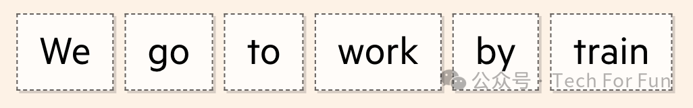

图解生成式AI


为了理解一个单词的意思，它们首先在上下文中使用大量的训练数据集对其进行观察，并记录下附近的单词。这些数据集是基于互联网上发布的文本进行整理，而最新的 LLM 则使用数十亿个单词进行训练。

最终，我们得到一组庞大的词集，当中包括在训练数据中与 work 同时出现的单词，以及未在 work 附近出现的单词。

词嵌入（Word Embedding）
当模型处理这组单词时，它会生成一个向量（或值列表），并根据每个单词与训练数据中单词的接近程度来调整它。该向量被称为词嵌入。

一个词向量可以有上百个维度，每个维度代表单词含义的不同方面。正如你可以通过房屋的特征来描述一所房屋（类型、位置、卧室、浴室、楼层），词向量中的维度量化了一个词的语言特征。

这些特征的推导方式意味着我们并不确切知道每个值代表什么，但我们期望以类似方式使用的单词往往具有看起来相似的嵌入。

举例来说， sea 和 ocean 这对词的使用语境可能并不相同（ "all at ocean " 并不能直接替代 "all at sea" ），但它们的含义却很接近，而嵌入式技术可以量化这种接近程度。

通过将每个嵌入式所代表的数百个维度减少到只有两个，我们可以更清楚地看到这些词之间的距离。

我们可能会发现代词簇（橙色所示）或交通方式（蓝色所示），并且能够以这种方式向量化单词是模型生成文本的第一步。

但这并不是 LLM 如此聪明的原因。使之能够像今天这样流畅地解析和书写的是一种名为 transformer 的模型，它从根本上加快和增强了计算机理解语言的能力。transformer 可以一次性处理整个语序（无论是句子、段落还是整篇文章） ，分析其所有部分，而不仅仅是单个单词。这样，软件就能更好地捕捉上下文和模式，更准确地翻译或生成文本。这种同步处理也使 LLM 的训练速度大大加快，从而提高了其效率和扩展能力。transformer 架构的一个关键概念是自注意力（self-attention）。这使得 LLM 能够理解单词之间的关系。
自注意力（Self-attention）
以下面一句话为例：

自注意力会审视文本中的每一个标记，并决定哪些标记对理解其含义最为重要。

在 transformers 之前，最先进的人工智能翻译方法是循环神经网络（ RNN ），它会扫描句子中的每个单词并顺序处理。

通过自注意力，transformers 可以同时计算句子中的所有单词。捕捉到这种上下文， LLM 就有了更复杂的语言解析能力。

在这个例子中，一次性评估整个句子意味着transformer 能够理解 interest 作为名词用于解释个人对政治的看法。如果我们调整句子为：

....... 该模式理解的 interest 现在被用于金融意义上。

当我们把句子组合在一起时，由于模型对所附文字的关注，它仍然能够识别出每个单词的正确含义。在第一次使用 interest 时， " no " 和 " in " 最受关注。

第二个则是 rate 和 bank 。

这一功能对于高级文本生成至关重要。如果没有这项功能，在某些上下文中可以互换但在其他上下文中不能互换的单词可能会被错误使用。

实际上， 自注意力的意思是如果生成了该句的摘要，您在写作时所用的 enthusiasm 就不会用在利率上。

这种能力超越了类似于 “ interest ” 这种有多重含义的单词。

在下面的句子中，自我注意能够计算出 it 最有可能指的是 dog 。

如果我们改动句子，把 hungry 换成 delicious ，模型就能重新计算，现在 it 最有可能指的是 bone 。

自注意力对语言处理的益处越大，好处就越多。它允许 LLM 从句子边界以外的地方获取上下文，让模型更深入地了解单词的使用方式和时机。

当前的 LLM 是在英文互联网上进行训练的，这些信息量使它们比前几代产品强大得多。从这个庞大的单词和图像语料库中，这些模型学习如何识别模式，并最终预测出下一个最合适的词。

在对提示词进行 token化和编码之后，我们剩下的一块数据代表了机器对我们输入的理解，包括词语的含义、位置和关系。
编码输出（Encoded output）
简单来说，transformer 模型现在的目标是预测一个序列中的下一个单词，并反复这样做，直到完成输出。

为此，该模型针对每个标记给出概率得分，该得分表示其成为序列中下一个单词的可能性。
 直到可以对生成文本表示满意时为止，它继续这样做。
直到可以对生成文本表示满意时为止，它继续这样做。

但此种单独预测下一个词的方法——被称为 “ 贪婪搜索 ” ——可能引入一些问题。有时，虽然每个独立标记可能都是下一个最佳匹配，但整个短语可能不那么相关。不一定总是错的，但也许也不是您期望的。

Transformers 使用多种方法来解决这个问题并提高其输出质量。一个示例称为束搜索。它不会只关注序列中的下一个词，而是整体观察一组更大标记的概率。

通过束搜索，模型能够考虑多条路线，并找到最佳方案。

这将产生更好的结果，最终使文本更加连贯，更像人类的文本。

但事情并不总是按计划进行。虽然文字看起来似乎合理、连贯，但事实并非总是正确的。LLM 不是查找事实的搜索引擎；它们是猜测序列中下一个最佳选项的模式发现引擎。
由于这种固有的预测性质，LLMs 也可以在研究人员称之为 "幻觉" 的过程中编造信息。它们可以生成虚构的数字、姓名、日期、引文，甚至是网络链接或整篇文章。
尽管研究人员表示幻觉永远不会被完全消除，但谷歌、OpenAI 和其他公司正在努力通过一种被称为 “支撑信息（grounding）” 的方法来限制幻觉。这包括将 LLM 的输出结果与网络搜索结果进行交叉检查，并向用户提供引文，以便他们进行验证。

人类还可以提供反馈并填补信息空白--这一过程被称为 "人类反馈强化学习"（RLHF）--从而进一步提高输出结果的质量。但是，要了解哪些查询可能会触发这些幻觉，以及如何预测和减少这些幻觉，仍然是一项巨大的研究挑战。
参考文献
https://techcommunity.microsoft.com/t5/fasttrack-for-azure/grounding-llms/ba-p/3843857
https://ig.ft.com/generative-ai/
https://en.wikipedia.org/wiki/Reinforcement_learning_from_human_feedback